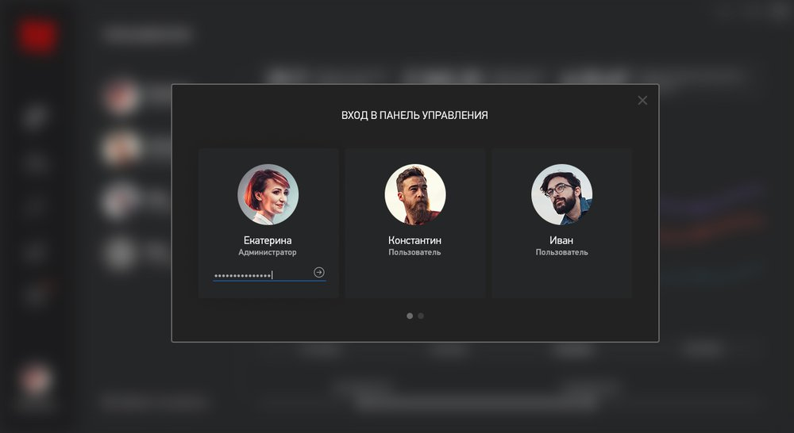
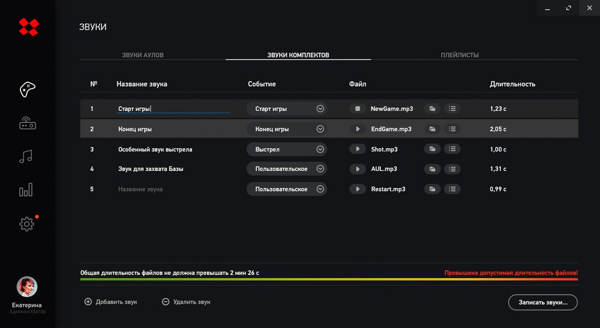
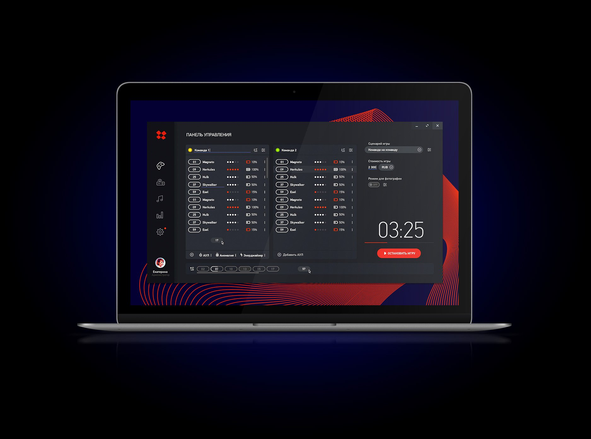
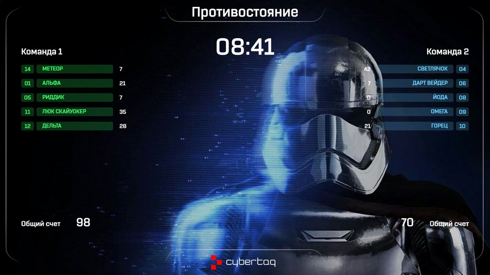

Настройка игры
Время, сценарий, команды, жизни и смерти игроков отображаются в одном интерфейсе.
Программное обеспечение
Эксклюзивное ПО CYBERTAG помогает настраивать бластеры, управлять игрой, публиковать и печатать статистику.
Панель администратора
Панель управления - сердце программного обеспечения Cybertag. Здесь настраивается оборудование и запускается игровой процесс.
Время, сценарий, команды, жизни и смерти игроков отображаются в одном интерфейсе.
Администратор подготавливает комплекты перед запуском игровой сессии.
Главное окно выводит сценарий, команды, события и лидера игры для зрителей.
Интерфейс
Скриншоты интерфейса показывают панель администратора, игровую статистику и экраны для контроля событий.




Системные требования
Для установки рекомендуется Windows 10 не ниже версии 2004, запуск установщика от имени администратора и временное отключение антивирусных программ.